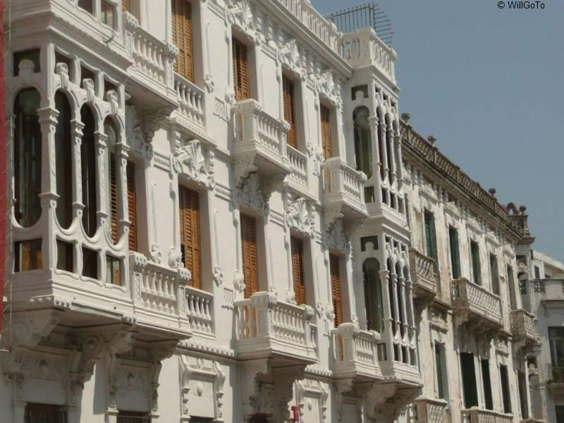

Les quartiers de Tétouan appartiennent à trois types de styles architecturaux différents : le style andalou (la Medina); le style espagnol du début et du milieu du xxe siècle (Ensanche) et le style d'après l'indépendance (quartiers périphériques).
Chaque style comporte des variantes plus ou moins importantes en relation avec l'évolution des styles et des matériaux utilisés.
La Médina (ancienne ville) de Tétouan est inscrite sur la liste du patrimoine mondial de l'UNESCO. Elle occupe aux yeux des spécialistes la première place de toutes les médinas du Maroc.
Le principal élément de la Médina est constitué par les remparts datant de la fin du xve siècle qui entourent la ville. Ces remparts laissent le passage à travers 7 entrées qui sont : Bab El Oqla, Bab Saaida (vers l'Est), Bab Mqabare et Bab Ejjyafe (vers le Nord), Bab Nouader (vers l'Ouest), Bab Toute, Bab Remouz (vers le Sud). À l'intérieur de la ville, les ruelles sont pittoresques et grouillantes de monde. Les principaux quartiers, datant de la construction de la ville, sont : Laayoune, Essania, Trankat, Rbat Aala, Bled, Rbat Asfal et Mellah.
La Medina
Les maisons de la Médina sont généralement très bien conservées par les descendants des propriétaires. Certaines ont bénéficié d'un programme de réhabilitation financé par la Junta de Andalucia. Du point de vue architectural, les maisons sont généralement constituées : (i) d'un rez-de-chaussée avec un couloir d'entrée (Zaguan, Dehliz) donnant sur un patio (Sahn), sur lequel s'ouvrent 2 ou 3 chambres fermées (bit), un salon ouvert (maqâad), la cuisine et les services; et (ii) d'un étage avec des chambres (ghorfa). Temporellement, les maisons obéissent à deux styles architecturaux différents :
Situé à l'ouest de la Medina, le quartier d'El Ensanche (prononcé Chanti par la population locale) représente le style architectural typique pendant le Protectorat espagnol. Il comporte essentiellement des immeubles de 5 étages avec des commerces au rez-de-chaussée. Certains bâtiments ont été réhabilités dans le cadre du programme de réhabilitation des bâtiments de Tétouan. L'intérieur est de type méditerranéen, avec un couloir sur lequel s'ouvrent les chambres, les salons et les services. Les bâtiments peuvent être construits en complexe avec un espace vert central (cas de Pabellones de Varela).

Un batiment d'El Ensanche
Au cours de la période post-coloniale, la ville a connu un important exode rural, et une expansion des constructions à la périphérie de la ville. Si les maisons des anciens habitants obéissent aux règles de construction tétouanaises modernisées (Bab El Oqla, Ziyyana), les autres maisons n'ont aucun style particulier. Il s'agit en général d'un R + 2 carré, avec commerce au rez-de-chaussée sans décoration. C'est le cas des quartiers de Touilaa (émigrants), Saniat Errmel, Sidi Talha (Barrio Malaga) (Dyor Del Makhzen, l'un des premiers quartiers construits en dehors de la ville, ce quartier était destiné aux soldats qui défendaient Tétouan, d'où le nom Dyor Del Makhzen, maisons des policiers/soldats ) etc...
D'autres quartiers périphériques, cas de Korat Essbaa, Touilaa Foqia (Touilaa Haute), Dersa et Samsa sont du type clandestin, construits par de nouveaux migrants (constructions sans autorisation). Récemment, la ville connaît une meilleure planification et un contrôle plus sévère, matérialisés par le développement de bâtiments modernes d'entre 6 et 12 étages (avenue des F.A.R et place de la colombe) et de quartiers résidentiels modernes (quartier wilaya et quartier de l'aéroport). Ces quartiers périphériques connaissent actuellement une profonde restructuration à travers le Programme de Développement Urbain "P.D.U."qui s'étale sur la période : 2009-2012